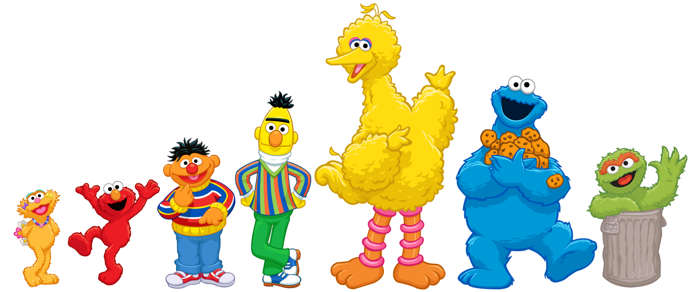

Individual Exam 01
AVERAGE SNOWFALL
This exam is worth 12 points. Each question is worth 1 point unless otherwise noted.
Copyright EPSY 3264, 2024
Copyright EPSY 3264, 2024
Instructions
Submit a PDF document to the TA of your responses to the following numbered questions. For additional information see the FAQs on the Course Requirements & Grading page of the website.
Modeling Average Snowfall
In the Introduction to Monte Carlo Simulation course activity, you used a model of a population to randomly generate outcomes for a sample of data. The sample of data was then summarized using a mean, count, proportion, etc. This process was then repeated a number of times and the distribution of the sample’s summaries was then examined to study the variation that would be expected based on the data generating process (DGP). In this exam you will use Monte Carlo simulation to study the variation in sample summaries.
One real-life situation that can be modeled as a random process is the number of days it snows in Minnesota, specifically in Minneapolis. As with most real-life situations, it can be hard to envision this as a random process—and in fact not all properties of weather are random. For example, snowfall patterns can be affected by weather systems and climate change. Warming of the planet causes more moisture in the atmosphere and can lead to higher snowfall amounts and more snowy days.
In a year (365 days) in Minneapolis, we expect to have snow on about 10.2% of the days. Conversely, we expect that on 89.8% of those days it will not snow.
Use TinkerPlots™ to set up a sampler based on a typical Minneapolis year: 365 days with snow on 10.2% of them. Copy and paste (or sketch) a picture of your TinkerPlot™ sampler into your word-processed document.
Explain why you chose the sampling device and the values (repeat, percentages, draw, etc.) you used in the sampler.
Carry out the First Trial of the Simulation
- Run the sampler to generate the outcomes for 365 days. Plot the outcomes for this hypothetical year. Also compute the number (count) of days with snow and no snow for this year. Copy and paste (or sketch) this plot into your word-processed document.
Carry Out Multiple Trials of the Simulation
Using the automation feature, run 50 trials of your simulation each time collecting the number of days with snow. Copy and paste the plot of the results from your 50 trials into your word-processed document.
Using the context of snowfall, what does a dot in this plot represent?
Report and interpret the mean value for your 50 results in context. (2pts.)
By referring to the model you set up in your TinkerPlots™ sampler, explain how you could have predicted what the value of the mean would be before looking at the plot.
Based on the plot of the 50 results, describe the variation in the distribution by giving the endpoints of the range where most years lie in the plot. Report this using the context of snowfall (i.e., in a typical year we expect how many days with snow in Minneapolis).
Use the Divider tool in TinkerPlots™ to find the percentage of results that fall in the range you provided in the previous question. Report this in a sentence.
In 2010, there were 51 days (13.97%) with snow in Minneapolis. Add a reference line to your plot of results at this value. Copy and paste the plot of results into your word-processed document. (Note this plot should include both the divider from Question #9 and the reference line.)
Is 51 days with snow a “typical” year? Or is it an “extraordinary” by Minneapolis standards? Explain your answer by referencing your simulation results, in particular, base it on the range you gave in Question #8.